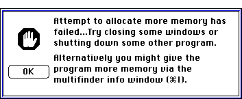
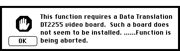
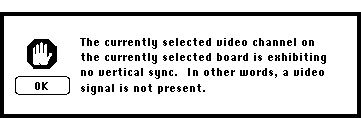

Distributed By: Virtual Labs
Alerts: Memory Errors
These alerts indicate the physical restrictions of the current computer.

- This alert is an indication that there is no more available system
memory for Desktop Microscopist. This is not a programing error. Simply
close any unnecessary windows and programs or reduce the size of the calculation.
- An attempt to add O.R.s beyond the capacity of this program has occurred.
The number of O.R.s is being set to the allowable maximum.
- This operation is not valid for the matrix...
- Out of Memory....Not enough memory is available to complete the calculation.
Try closing open windows and other applications. Similar to the first Memory
Alert.
- List Overflow. The specified parameters generated too much data for
display. The data has been truncated. Do not assume it is complete.
Frame Grabber Errors;:.
To use the Digitize Image... object, Desktop Microscopist requires a Quick
Capture or compatible video board.

Frame Grabber Board Error Alert Box
The second alert concerned with the video imaging of the Digitize Image
object is an indication that either the camera is turned off or an improper
channel has been selected.

Frame Grabber Vertical Sync. Error Alert Box
Warnings About Actions to be taken:
Listed below are some additional informational alert messages:
- A target d Spacing less than .5 Å has been defined. This
calculation could take a LONG time and use a LOT of memory....Would you
like to perhaps reconsider?
- Would you like to have the Picture fitted to fill the page? This
alert is seen when printing. It effects how Stereographic, objects derived
from Stereographic Projections and Real lattice images are printed. Use
it to insure the maximum resolution.
- Sorry, but there is a maximum capability of 26 different User defined
fractional occupancy atoms. You are trying to exceed that limitation....No
can do. This alert is seen in the Crystal Definition Dialog box and
is self-explanatory. Desktop Microscopist allows a maximum of 26 User Defined
Fractional Occupancy atoms.
- Undefined Atoms: Cannot proceed. Some entries have undefined
atomic numbers. This alert is seen when leaving the Crystal Definition Dialog
Box and it indicates that one of the atomic symbols cannot be interpreted
by Desktop Microscopist. Check the symbols for any that are improper or
misspelled.
- Sorry.....But this program requires a Floating Point Co-Processor,
a MC68881, MC68882, or a MC68040 CPU. This alert is seen at start up
to let the user know that the requisite hardware to run Desktop Microscopist
is not available. See your Macintosh dealer to determine an upgrade path.
- Refresh stack is corrupt. Inactive windows will no longer update.
The program may crash. Best SAVE your work NOW!
- Duplicate File Name.......Do you want to abort this action?
Author: J.ames T.
Stanley
 Desktop
Manual
Desktop
Manual
Distributed By: Virtual
Labs
Last Updated:1/12/96 Sat, Apr 27, 1996